visStatistics: The right test, visualised
Sabine Schilling
Institute of Tourism and Mobility, Lucerne University of Applied Sciences and Artssabine.schilling@protonmail.com
2026-05-04
Source:vignettes/visStatistics.Rmd
visStatistics.RmdAbstract
visStatistics automatically selects and visualises
appropriate statistical hypothesis tests between two column vectors of
type of class "numeric", "integer", or
"factor". The choice of test depends on the
class, distribution, and sample size of the vectors, as
well as the user-defined ‘conf.level’. The main function
visstat() visualises the selected test with appropriate
graphs (box plots, bar charts, regression lines with confidence bands,
mosaic plots, residual plots), annotated with the main test results,
including any assumption checks and post-hoc analyses.
This scripted workflow is well suited for browser-based applications where sensitive data (such as highly confidential medical records) is stored securely on a server and never directly accessed by users. Users interact only through a web interface, while server-side R applications handle the data processing. Typical use cases include secure data exploration, quick visualisations, and guided statistical test selection, for example in statistical consulting or educational settings.
Introduction
While R packages exist which combine statistical analysis with the appropriate visualiation of the data (e.g. (Patil 2021)) , none exists to automate the statistical test selection combined with statistically annotated plots as a primary concern.
The visStatistics package addresses this challenge by using deterministic decision logic, removing the burden of manual test choice. This automation enables users to focus directly on interpreting statistical outcomes rather than navigating test selection.
The tailored visual outputs—annotated with test results and, where appropriate, assumption checks and post-hoc analyses—further support comprehension and help ensure valid conclusions from the outset.
The package was originally developed for server-based applications where users have limited interaction: they provide only two input vectors, and the software returns valid, interpretable results without requiring further statistical knowledge. This supports reproducibility and correct inference even in such constrained environments.
The package is also particularly valuable in statistical consulting for student research projects, where time constraints demand streamlined, assumption-aware output that prioritises interpretation over technical execution. The implemented tests cover the typical content of an introductory undergraduate course in statistics.
Getting started
3. Minimal function call
The function visstat() accepts input in three ways:
# Standardised form (recommended):
visstat(x, y)
# Formula interface:
visstat(y ~ x, data = dataframe)
# Backward-compatible form:
visstat(dataframe, "namey", "namex")x and y must be vectors of class
"numeric", "integer", or
"factor".
In the formula interface, y ~ x specifies the
relationship, where y is the response variable and
x is the predictor, with both being column names in
dataframe.
In the backward-compatible form, "namex" and
"namey" must be character strings naming columns in
dataframe, which must themselves be of class
"numeric", "integer", or
"factor".
Decision logic
Throughout the remainder, data of class "numeric" or
"integer" are referred to by their common mode
numeric, while data of class "factor" are
referred to as categorical. The significance level
,
used throughout for hypothesis testing, is defined as
1 - conf.level, where conf.level is a
user-controllable argument (defaulting to 0.95).
The choice of statistical tests performed by the function
visstat() depends on whether the data are numeric or
categorical, the number of levels in the categorical variable, the
distribution of the data, as well as the user-defined ‘conf.level’.
The function prioritizes interpretable visual output and tests that
remain valid under the following decision logic. The following graph
gives an overview of all implemented test based on their
class:
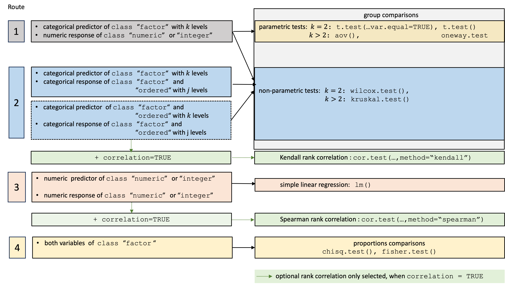
Overview of the implemented statistical tests based on the class of the variables.
A graphical summary of the decision logic used for numerical responses and categorial predictors resulting in comparisons of central tendencies is given in below figure:

Decision tree used to select the appropriate statistical test for a categorical predictor and numeric response, based on the sample sizes, number of factor levels, normality, and homoscedasticity.
Numeric response and categorical predictor: Comparing central tendencies
When the response y is numeric and the predictor
x is categorical, a statistical hypothesis test comparing
central tendencies is selected.
Normality testing of the residuals: A linear model
aov(y~x)is fitted to extract standardized residuals, which are assessed for normality using the Shapiro-Wilk (SW) test (Shapiro and Wilk 1965) (shapiro.test()) at significance level . Simulation studies show that the Shapiro-Wilk test is the most powerful for detecting non-normality across most distributions, especially with smaller sample sizes (Razali and Wah 2011; Ghasemi and Zahediasl 2012).Non parametric-tests: If the test rejects normality (), non-parametric tests are selected: the Wilcoxon rank-sum test (
wilcox.test()) for two groups, or the Kruskal–Wallis test (kruskal.test()) followed by pairwise Wilcoxon tests (pairwise.wilcox.test()) for more than two groups.-
Parametric tests: When there is insufficient evidence against normality () or when the sample sizes are large (more than 50 observations per group), parametric tests are selected. In large samples the central limit theorem ensures approximate normality of the sampling distribution of the mean. (Rasch et al. 2011; Lumley et al. 2002; Kwak and Kim 2017)
- Homoscedasticity: The Levene–Brown–Forsythe (L) test (implemented as
levene.test()) (Brown and Forsythe 1974) tests for homogeneous variances.When homogeneity is not rejected (): For two groups, Student’s t-test (
t.test()withvar.equal = TRUE) is applied; for more than two groups, Fisher’s one-way ANOVA (aov()) with Tukey’s Honestly Significant Differences (HSD) (TukeyHSD()) (Hochberg and Tamhane 1987) is applied.When homogeneity is rejected (): For two groups, Welch’s t-test (
t.test()withvar.equal = FALSE) is applied; for more than two groups, Welch’s heteroscedastic one-way ANOVA (oneway.test()) with Games-Howell post-hoc test (games.howell()) (Games and Howell 1976) is applied. Welch’s methods outperform their classical counterparts when variances differ (Moser and Stevens 1992; Fagerland and Sandvik 2009; Delacre et al. 2017).
- Homoscedasticity: The Levene–Brown–Forsythe (L) test (implemented as
Regardless of sample size, general linear model (GLM) assumption diagnostics as described in section xxx are always displayed. When heteroscedasticity is detected and Welch methods are selected, group-wise normality diagnostics are additionally displayed because residual-based normality testing assumes homoscedasticity. These diagnostic plots enable users to visually assess whether assumptions are met and manually override the automated p-value-based test selection.
Both variables numeric: Simple linear regression, Pearson or Spearman
Causal relationship: Simple linear regression
(lm())
By default, visstat() assumes a causal, linear
relationship between a numeric response and predictor and simple linear
regression model (lm()) is fitted and analysed in detail,
including residual diagnostics, formal tests, and the plotting of fitted
values with confidence bands. Note that only one
predictor variable is allowed, as the function is designed for
two-dimensional visualisation.
Non-causal relationship: Correlation analysis (Pearson or Spearman)
When no directional relationship is assumed (by flag
do_regression = FALSE) between two numeric variables,
visstat() performs correlation analysis using either
Pearson’s product-moment correlation
(cor.test(method = "pearson")) for bivariate normal data or
Spearman’s rank correlation (cor.test(method = "spearman"))
as a non-parametric alternative. Spearman correlation operates on the
ranks of the data rather than the original values, making it robust to
outliers and non-normal distributions while detecting monotonic
relationships. The choice between methods is determined by applying the
Shapiro-Wilk test to both variables separately, with Pearson correlation
selected only when both variables pass normality testing at the
specified significance level.
Both variables of class factor
Comparing proportions (Chi-squared or Fisher’s exact test)
When both variables are categorical (and not orderd), no direction is assumed; the order of variables in the function call does not affect the test statistic, but it does influence the graphical output. For consistency, we continue referring to the variables as predictor and response.
visstat() tests the null hypothesis that the variables
are independent using either Pearson’s
test (chisq.test()) or Fisher’s exact test
(fisher.test()), depending on expected cell counts. The
choice of test is based on Cochran’s rule (Cochran 1954), which advises that
the
approximation is reliable only if no expected cell count is less than 1
and no more than 20 percent of cells have expected counts below 5.
Ordered response of class ordered
When the response variable is an ordered factor (e.g., Likert scale
ratings) and the predictor is categorical, visstat()
converts the ordered response to numeric ranks and applies
non-parametric tests. This is the appropriate analysis for ordinal data,
as the numeric distances between ordered categories are not necessarily
equal and the data cannot be assumed to follow a normal distribution.
Users should declare Likert scale responses as ordered factors using
ordered() to ensure non-parametric testing.
General Linear Model
General Linear Models (GLM) (Searle 1971; Nimon et al. 2017) provide a unified mathematical framework underlying the Student’s t-test, Fisher ANOVA, and simple linear regression.
Let denote the number of observations and the number of predictors. The GLM for observation is:
where is the response for observation , is the value of predictor for observation , are the parameters, and are independently distributed error terms with constant variance .
Student’s t-test
Student’s tests the null hypothesis that the means of two (unpaired) groups are equal. We create one indicator binary variable , where for observations in group 1 and for observations in group 2. Taking expectations for each group:
- Group 1 ():
- Group 2 ():
Therefore, represents the difference between group means. Testing is mathematically equivalent to testing in Student’s t-test.
Fisher’s ANOVA
Fisher’s one-way ANOVA tests the null hypothesis that the means groups are equal.
It can be formulated within the General Linear Model framework using indicator variables for each observation to represent group membership. The indicator variable coding is defined as follows:
- Group 1 (reference): for all observations i in group 1
- Group 2:
and
for all observations i in group 2
- Group 3: and for all observations i in group 3
- …
- Group k: and for all observations i in group k
Taking expectations for each group:
- Group 1:
- Group 2:
- Group 3:
- …
- Group k:
Testing is mathematically equivalent to testing in Fisher’s ANOVA.
Simple linear regression
Simple linear regression corresponds to one continuous predictor for observation . Testing examines whether there is a linear relationship between the predictor and the response.
GLM Assumption Testing: vis_glm_assumptions
All tests within in the GLM framework share the same set of assumptions:
- Linearity: The expected value of the response is a linear function of the predictors; assessed by checking for systematic patterns in residual plots.
Error terms are:
independent,
normally distributed and
homoscedastic: Constant error variance
The function vis_glm_assumptions() provides a unified
visual and statistical framework for validating the GLM assumptions. It
fits GLM model using aov() and provides four standard
diagnostic plots:
Histogram and Normal Density: Displays the distribution of standardized residuals with a red normal density curve overlay to visually assess normality.
Std. Residuals vs. Fitted: It shows the standardized residuals against fitted values with a zero-line to detect non-linearity or heteroscedasticity.
Normal Q-Q Plot: A theoretical quantile-quantile plot using the standardized residuals to identify deviations from the Gaussian distribution.
If
regression = TRUE, the Standardized Residuals vs. Leverage plot, ifregression = FALSE, a Scale-Location plot.
Test for normality and homoscecadicity
The diagnositc plots are enhanced by p-values of tests for normality and homoscecadicity, shown in the title of the plot.
Normality Assessment: The function evaluates
residual normality using both the Shapiro-Wilk test
(shapiro.test()) and Anderson-Darling test
(ad.test()) (Gross and Ligges 2015).
These tests offer complementary strengths: Shapiro-Wilk generally exhibits greater power across non-normal distributions in small samples, while Anderson-Darling is highly sensitive to tail deviations in larger samples (Razali and Wah 2011; Yap and Sim 2011).
Homoscedasticity Assessment: Variance equality is
tested using the Levene-Brown-Forsythe test (levene.test())
(Brown and Forsythe
1974) and Bartlett’s test (bartlett.test()) in
the ANOVA path.
These tests compare the spread of data across different factor levels.
For simple linear regression, the Breusch-Pagan test
(bp.test()) is implemented.
These three tests have standalone implementations in the package to avoid dependencies on external packages.
Tests for Homoscedasticity
The Levene–Brown–Forsythe test
levene.test()
The Levene–Brown–Forsythe test improves upon Levene’s original test (Levene 1960) by using the median instead of the mean to centre the data.
This makes it more robust to skewed data or data with outliers providing more reliable results in many practical situations (Allingham and Rayner 2012).
levene.test() mimics the default behaviour of
leveneTest() in the car package (Fox and Weisberg
2019).
The Levene–Brown–Forsythe test evaluates the null hypothesis that all groups have equal variances by testing whether the absolute deviations from group medians are equal across groups.
For each observation in group , it computes the absolute deviation from the group median:
where is the median of group .
The test statistic is the F-statistic from a one-way ANOVA on the values:
where is the number of groups, is the total sample size, is the sample size of group , is the mean of absolute deviations from the median in group , and is the overall mean of all absolute deviations.
Under the null hypothesis of equal variances, the test statistic follows an F-distribution: .
Bartlett’s test
bartlett.test()
Additionally, homoscedasticity is assessed via Bartlett’s test (Bartlett 1937)
(bartlett.test()), which has more power than the
Brown–Forsythe version of Levene’s test (Brown and Forsythe 1974) when the
normality assumption is met (Allingham and Rayner 2012)
Bartlett’s test evaluates whether sample variances are equal across normally distributed groups.
The test statistic is
where is the sample variance of group , and is the pooled variance:
Under the null hypothesis that all group variances are equal and the data are normally distributed, the test statistic approximately follows a -distribution with degrees of freedom (Bartlett 1937).
Breusch-Pagan test `bp.test()``
For linear regression (regression = TRUE), group-based
tests cannot be used. Instead, the vissstatics package
function bp.test() implements the Breusch-Pagan test.
The Breusch-Pagan test assesses whether the variance of the residuals from a regression model depends on the values of the independent variables (Breusch and Pagan 1979).
.
The diagnostics plots together with the p-values of the tests for normality and homoscedasticity enable the user to assess whether classical GLM assumptions are met and manually override the automated test selection.
Implemented tests with examples
For all implemented tests, this section provides mathematical background and references. We report the definition of the test statistic, its distribution under the null hypothesis, and any relevant assumptions.
Numeric response and categorical predictor: Comparing central tendencies
When the predictor consists of class
“factor” with two or more levels and the response is of
class “numeric” or “integer”
(both having mode “numeric”), statistical tests are applied
to compare the central tendencies across groups. This section describes
the conditions under which parametric and non-parametric tests are
chosen, based on the response type, the number of factor levels, and the
underlying distributional assumptions.
Categorical predictor with two levels: Welch’s t-test and Wilcoxon rank-sum
When the predictor variable has exactly two levels, Student t-test, Welch’s t-test or the Wilcoxon rank-sum test is applied.
Student’s t-test (t.test(var.equal = TRUE))
The test statistic for Student’s t-test is given by:
where and are the sample means, and are the sample sizes, and is the pooled standard deviation:
where and are the sample variances in the two groups. The test statistic follows a t-distribution with degrees of freedom.
Welch’s t-test (t.test())
Welch’s t-test relaxes the homoscedasticity assumption of the GLM while maintaining the requirements for independent observations and normally distributed residuals. It evaluates the null hypothesis that the means of two groups are equal without assuming equal variances.
The test statistic is given by (Welch 1947; Satterthwaite 1946)
where and are the sample means, and the sample variances, and , the sample sizes in the two groups. The statistic follows a t-distribution with degrees of freedom approximated by the Welch-Satterthwaite equation:
The resulting p-value is computed from the t-distribution with degrees of freedom.
Not that when the assumption of equal variances holds () and sample sizes are equal (), Welch’s t-test reduces to Student’s t-test with degrees of freedom.
Wilcoxon rank-sum test (wilcox.test())
The two-sample Wilcoxon rank-sum test (also known as the Mann-Whitney test) is a non-parametric alternative that does not require the response variable to be approximately normally distributed within each group. It tests for a difference in location between two independent distributions (Mann and Whitney 1947). If the two groups have distributions that are sufficiently similar in shape and scale, the Wilcoxon rank-sum test can be interpreted as testing whether the medians of the two populations are equal (Hollander et al. 2014).
The two-level factor variable x defines two groups, with
sample sizes
and
.
All
observations are pooled and assigned ranks from
to
.
Let
denote the sum of the ranks assigned to the group
corresponding to the first level of x containing
observations:
,
where is the rank of observation in the pooled sample.
The test statistic
returned by wilcox.test() is then computed as
It corresponds to the Mann-Whitney (Mann and Whitney 1947) statistic of the first group.
If both groups contain fewer than 50 observations and the data contain no ties, the p-value is computed exactly. Otherwise, a normal approximation with continuity correction is used.
–>
–>
The function returns a list containing the results of the applied test and the summary statistics used to construct the plot.
Examples
Welch’s t-test
The Motor Trend Car Road Tests dataset (mtcars)
contains 32 observations, where mpg denotes miles per (US)
gallon, and am represents the transmission type
(0 = automatic, 1 = manual).
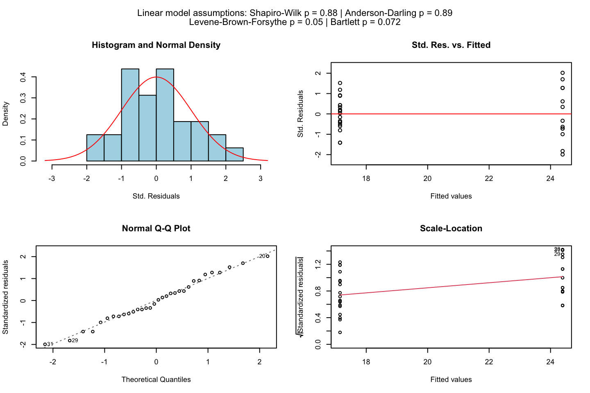
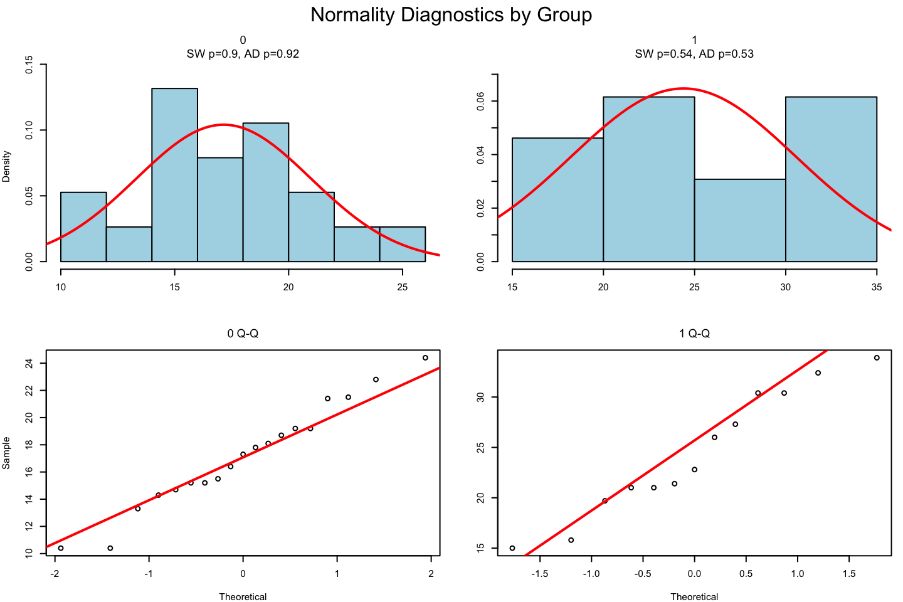
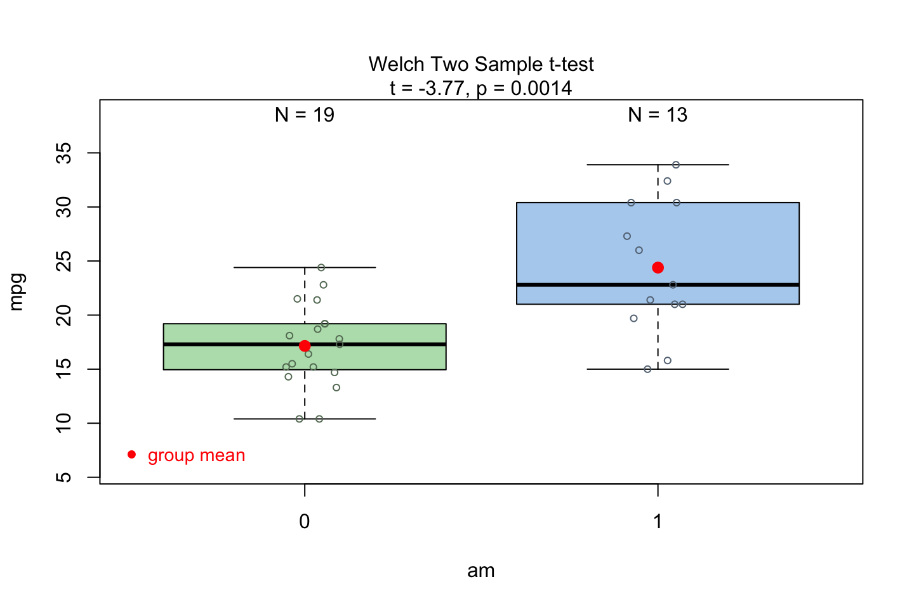
Increasing the confidence level conf.level from the
default 0.95 to 0.99 results in wider confidence intervals, as a higher
confidence level requires more conservative bounds to ensure that the
interval includes the true parameter value with greater certainty.
Wilcoxon rank sum test
The Wilcoxon rank sum test is exemplified on differences between the central tendencies of grades of “boys” and “girls” in a class:
grades_gender <- data.frame(
sex = as.factor(c(rep("girl", 21), rep("boy", 23))),
grade = c(
19.3, 18.1, 15.2, 18.3, 7.9, 6.2, 19.4,
20.3, 9.3, 11.3, 18.2, 17.5, 10.2, 20.1, 13.3, 17.2, 15.1, 16.2, 17.0,
16.5, 5.1, 15.3, 17.1, 14.8, 15.4, 14.4, 7.5, 15.5, 6.0, 17.4,
7.3, 14.3, 13.5, 8.0, 19.5, 13.4, 17.9, 17.7, 16.4, 15.6, 17.3, 19.9, 4.4, 2.1
)
)
wilcoxon_statistics <- visstat(grades_gender$sex, grades_gender$grade)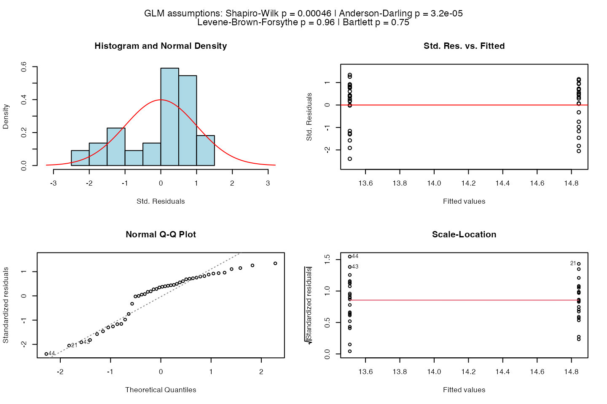
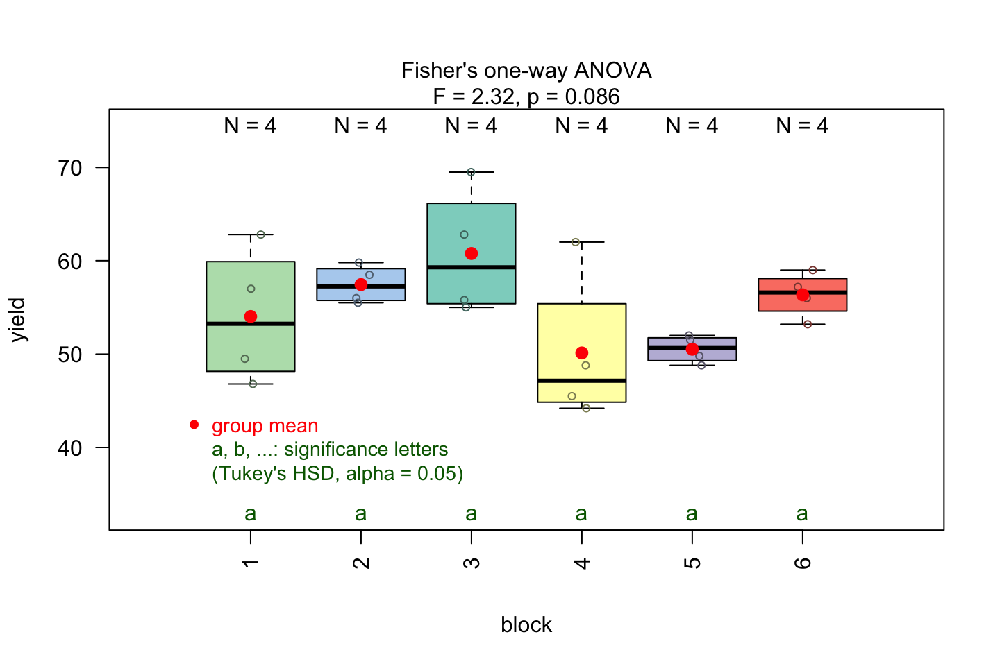
Wilcoxon with ordinal response
set.seed(123)
# Create predictor: Customer segment (2 groups)
segment <- factor(rep(c("Budget", "Premium"), each = 50))
# Create response: Likert scale ratings (1-5)
satisfaction_numeric <- c(
sample(1:5, 50, replace = TRUE, prob = c(0.15, 0.25, 0.30, 0.20, 0.10)), # Budget
sample(1:5, 50, replace = TRUE, prob = c(0.05, 0.10, 0.20, 0.35, 0.30)) # Premium
)
# Create dataframe with ORDERED response
survey_data <- data.frame(
segment = segment,
satisfaction = ordered(satisfaction_numeric) # Declare as ordered
)
# triggers warnings and use Wilcoxon test
result <- visstat(survey_data, "satisfaction", "segment")## Warning in visstat_core(dataframe = dataframe, varsample = varsample, varfactor
## = varfactor, : Ordered response (e.g., Likert scale) detected. Converting to
## numeric ranks for non-parametric analysis.## Warning in visstat_core(dataframe = dataframe, varsample = varsample, varfactor
## = varfactor, : Ordinal response detected. Defaulting to non-parametric tests.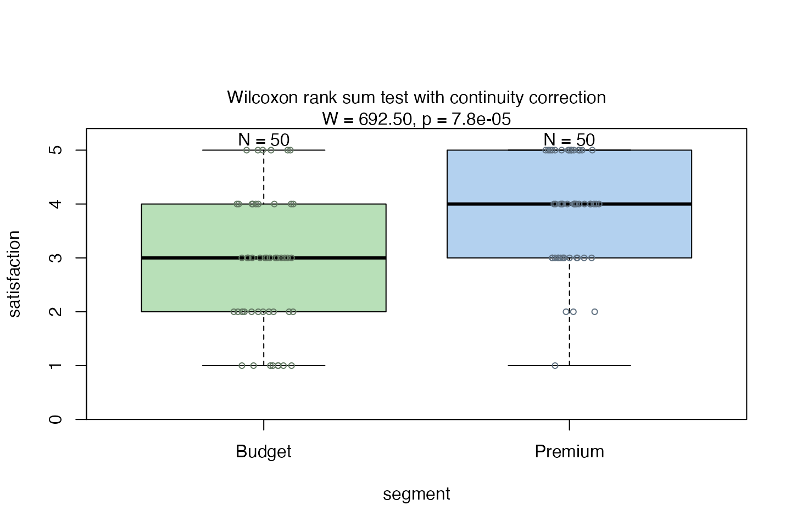
Categorical predictor with more than two levels
If the predictor is of class “factor” with
more than two levels and the response is of
mode “numeric”, visstat() either
performs
Welch’s heteroscedastic one-way ANOVA (Welch 1951)
(oneway.test()) or, as a non-parametric alternative, the
Kruskal -Wallis test (Kruskal and Wallis 1952)
(kruskal.test()).
In the remainder of this section, we briefly introduce the tests themselves, the assumption checks, and the post-hoc procedures, and illustrate each test with an example.
Fisher’s one-way ANOVA (aov())
Fisher’s one-way ANOVA (aov()) tests the null hypothesis
that the means of
groups are equal.
As it represents a General Linear Model, it assumes independent observations, normally distributed residuals, and homogeneous variances across groups. The test statistic is the ratio of the variance explained by differences among group means (between-group variance) to the unexplained variance within groups (Fisher and Yates 1990)
where:
where and are the mean square between groups and mean Square within groups respectively.
= Sum of Squares between groups (variance due to group differences) - = Sum of Squares within groups (error variance),
= number of groups - = total sample size
where is the mean of group , is the overall mean, is the observation in group , is the sample size in group , is the number of groups, and is the total number of observations.
Under the null hypothesis, this statistic follows an F-distribution with two parameters for degrees of freedom: () and (): The resulting p-value is computed from this distribution.
Welch’s heteroscedastic one-way ANOVA
(oneway.test())
When only the assumptions of independent observations and normally
distributed residuals are met, but homogeneous variances across
groups cannot be assumed, Welch’s heteroscedastic one-way ANOVA
(oneway.test()) (Welch 1951) provides an alternative to
aov(). It compares group means using weights based on
sample sizes and variances. The degrees of freedom are adjusted using a
Satterthwaite-type approximation (Satterthwaite 1946), resulting
in an F-statistic with non-integer degrees of freedom. The Welch
F-statistic is calculated as (Welch 1951):
where are the weights (inverse variances), , is the weighted grand mean, is the number of groups, is the sample size of group , and is the variance of group .
Connection to Student’s one-way ANOVA
In the two-sample setting, Welch’s -test reduces exactly to Student’s -test when variances and sample sizes are equal. This exact equivalence does not extend to the multi-group case: Even under equal variances () and equal sample sizes (), the resulting test statistic is not algebraically identical to the classical ANOVA -statistic. Nevertheless, under these conditions the Welch statistic converges to the classical -statistic, and any numerical differences become negligible in practice. (Welch 1951).
Relationship between t-tests and ANOVA
t-tests are special cases of ANOVA for the comparison of two groups. The squared -statistic equals the corresponding -statistic:
.
For the comparison of two groups, Student’s t-test,
t.test(var.equal = TRUE), and aov() yield
identical p-values, as does Welch’s t-test
t.test(var.equal = FALSE) and oneway.test().
In this case, visstat() reports the commonly used
t-statistic, as it provides sign information (indicating which group has
the larger mean).
Kruskal–Wallis test (kruskal.test())
When the assumption of normality is not met, the Kruskal–Wallis test provides a non-parametric alternative. It compares group distributions based on ranked values and tests the null hypothesis that the groups come from the same population — specifically, that the distributions have the same location (Kruskal and Wallis 1952). If the group distributions are sufficiently similar in shape and scale, then the Kruskal–Wallis test can be interpreted as testing for equality of medians across groups (Hollander et al. 2014).
The test statistic is defined as:
where is the sample size in group , is the number of groups, is the average rank of group , is the total sample size, and is the average of all ranks. Under the null hypothesis, approximately follows a distribution with degrees of freedom.
Post-hoc analysis
Post-hoc test following an aov():
TukeyHSD()
ANOVA is an omnibus test that evaluates a single null hypothesis: all group means are equal. If the null hypothesis gets rejected, we would like to identify which specific groups differ significantly from each other. However, simple pairwise comparisons of group means following an ANOVA increases the probability of incorrectly declaring a significant difference when, in fact, there is none.
This error is quantified by the family-wise error rate “alpha per family of tests” , which refers to the probability of making at least one Type I error, that is, falsely rejecting the null hypothesis across all pairwise comparisons.
Given levels of the categorical variable, there are
pairwise comparisons possible, defining a family of tests (Abdi 2007). corresponds to the number of null hypotheses in the post hoc tests, each testing whether the means of two specific groups are equal.
Šidák correction
If (“alpha per test”) is the probability of making a Type I error in one comparison, then is the probability of not making a Type I error in one comparison.
If all comparisons are independent of each other, the probability of making no Type I error across the entire family of pairwise comparisons is . The family-wise error rate is then given by its complement (Abdi 2007):
Solving the last equation defining for yields the Šidák equation (Šidák 1967):
This shows that, in order to achieve a given family-wise error rate, the corresponding per-test significance level must be reduced when there are more than two groups.
visstat() sets
to the user-defined
conf.level, resulting in
With the default setting conf.level = 0.95, this leads
to:
- groups:
- groups:
- groups:
visstat() displays the Šidák corrected
confidence
intervals around individual group means in the graphical output for
visualisation purposes only.
Thhe Šidák approach becomes increasingly conservative as the number
of comparisons grows. Moreover, since the method assumes independence
among tests, it may be overly conservative when this assumption is
violated. visstat() therefore employs more specialized
post-hoc procedures that account for the correlated nature of pairwise
comparisons.
In contrast to the general-purpose Šidák correction, Tukey’s Honestly
Significant Differences procedure (TukeyHSD()) is
specifically designed for pairwise mean comparisons following an ANOVA
(aov()). It controls the family-wise error rate using a
critical value from the studentised range distribution, which properly
accounts for the correlated nature of pairwise comparisons sharing a
common residual variance (Hochberg and Tamhane 1987).
Based on the user-specified confidence level
(conf.level), visstat() constructs confidence
intervals for all pairwise differences between factor
level means. A significant difference between two means is indicated
when the corresponding confidence interval does not include zero.
visstat() returns both the HSD-adjusted p-values and the
associated confidence intervals for all pairwise comparisons.
For graphical display, visstat() uses a dual approach:
TukeyHSD() provides the statistical test results and
significance determinations, while Šidák-corrected confidence intervals
around individual group means are shown for visualisation purposes. This
separation allows for optimal statistical testing while maintaining
clear, interpretable graphics.
Post-hoc test following oneway.test():
Games-Howell-Test games.howell ()
In contrast to the general-purpose Šidák correction, the
Games-Howell-test procedure (games.howell()) is
specifically designed for pairwise mean comparisons following an
Welch-ANOVA (oneway.test()). It controls the family-wise
error rate using a critical value from the studentised range
distribution, which properly accounts for the correlated nature of
pairwise comparisons. Unlike Tukey’s HSD, Games-Howell uses separate
variance estimates for each pairwise comparison and Welch-adjusted
degrees of freedom, making it appropriate when variances are unequal
(Games and Howell
1976).
Based on the user-specified confidence level
(conf.level), visstat() constructs confidence
intervals for all pairwise differences between factor
level means. A significant difference between two means is indicated
when the corresponding confidence interval does not include zero.
visstat() returns both the Games-Howell-adjusted p-values
and the associated confidence intervals for all pairwise
comparisons.
For graphical display, visstat() uses a dual approach:
games.howell() provides the statistical test results and
significance determinations, while Šidák-corrected confidence intervals
around individual group means are shown for visualisation purposes.
Post-hoc test following the Kruskal–Wallis rank
sum test: pairwise.wilcox.test()
As a post-hoc analysis following the Kruskal–Wallis test,
visstat() applies the pairwise Wilcoxon rank sum test using
pairwise.wilcox.test() to compare each pair of factor
levels (see section “Wilcoxon rank-sum test
(wilcox.test())”).
The resulting p-values from all pairwise comparisons are then adjusted for multiple testing using Holm’s method (Holm 1979): The p-values are first sorted from smallest to largest and tested against thresholds that become less strict as their rank increases. This stepwise adjustment does not assume independence among tests and is typically less conservative than the Šidák method, while still ensuring strong control of the family-wise error rate.
Graphical output
The graphical output for all tests based on a numeric response and a categorical predictor with more than two levels consists of two panels: the first focuses on the residual analysis, the second on the actual test chosen by the decision logic.
The residual panel addresses the assumption of normality, both graphically and through formal tests. It displays a scatter plot of the standardised residuals versus the predicted values, as well as a normal Q–Q plot comparing the sample quantiles to the theoretical quantiles. If the residuals are normally distributed, no more than of the standardised residuals should exceed approximately ; in the Q–Q plot the data points should approximately follow the red straight line.
The p-values of the formal tests for normality (Shapiro–Wilk and Anderson–Darling) as well as the tests for homoscedasticity (Bartlett’s and Levene Brown–Forsythe) are given in the title.
visstat() then illustrates, in the subsequent graph,
either the kruskal.test(), the oneway.test(),
or aov() result (see also Section “Decision logic”).
If neither normality of the residuals nor homogeneity of variances is
given, the kruskal.test() is executed. The result is
illustrated using box plots alongside jittered data points, with the
title displaying the p-value from kruskal.test().
Above each box plot, the number of observations per level is shown.
Different green letters below a pair of box plots indicate that the two
groups are considered significantly different based on Holm’s-adjusted
pairwise Wilcoxon rank sum test p-values smaller than
.
The letters are generated with the help of the function
multcompLetters() from the multcompView
package (Graves et al. 2024)).
If normality of the residuals can be assumed, a parametric test is
chosen: either aov(), if homoscedasticity is also assumed,
or oneway.test() otherwise. visstat() displays
the name of the test and the corresponding
and p-value in the title.
The graph shows both the conf.level
confidence intervals corresponding to the null hypothesis of ANOVA (all
group means are equal) and the Šidák-corrected
confidence intervals used in the post hoc analysis.
In visstat(), the Šidák intervals are used only for
visualisation, as the underlying method assumes independent comparisons
and can become overly conservative when this assumption is violated.
The actual post hoc analysis should be based on
TukeyHSD(). A significant test result between two groups is
graphically represented by different green letters below a pair of group
means.
Besides the graphical output, visstat() returns a list
containing the relevant test statistics along with the corresponding
post-hoc-adjusted
-values
for all pairwise comparisons.
Examples
ANOVA
The npk dataset reports the yield of peas (in pounds per
block) from an agricultural experiment conducted on six blocks. In this
experiment, the application of three different fertilisers – nitrogen
(N), phosphate (P), and potassium (K) – was varied systematically. Each
block received either none, one, two, or all three of the
fertilisers,
anova_npk <- visstat(npk$block,npk$yield,conf.level=0.90)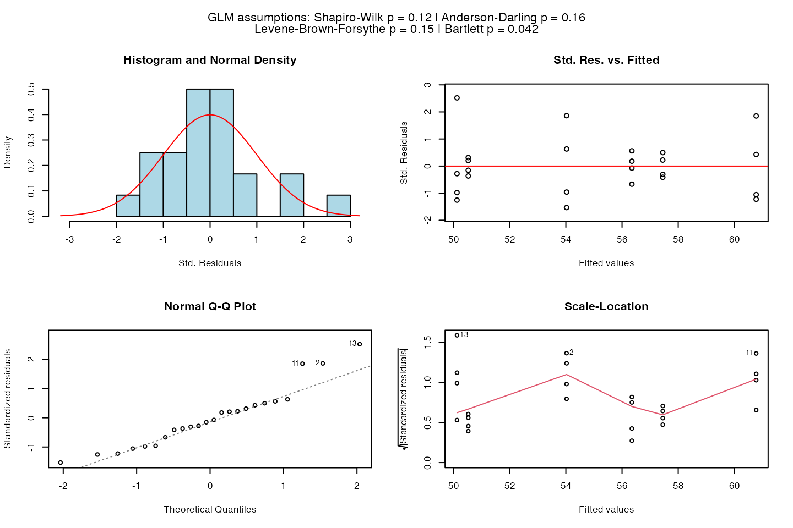
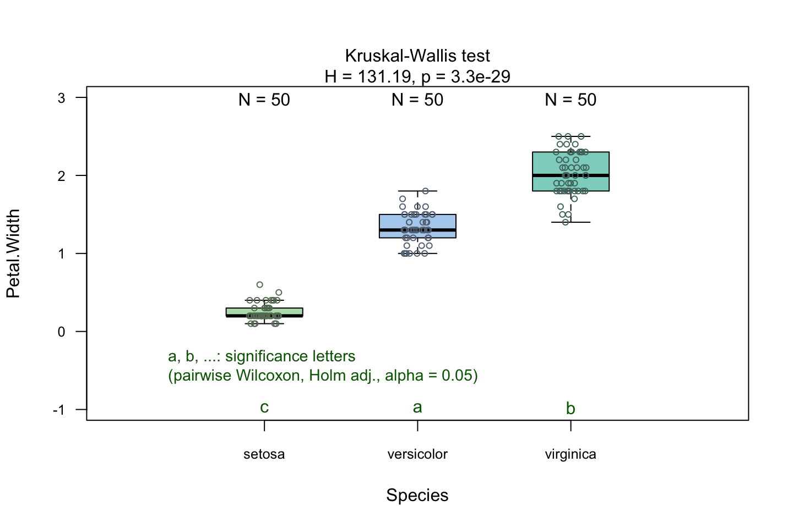
Normality of residuals is supported by graphical diagnostics
(histogram, scatter plot of standardised residuals, Q-Q plot) and formal
tests (Shapiro–Wilk and Anderson- Darling, both with
).homogeneity
of variances is not supported at the given confidence level by
bartlett.test(), but by levene.test()
().
The decision logic is based on levene.test() and triggers
aov(). Post-hoc analysis with TukeyHSD() shows
no significant yield differences between blocks, as all share the same
group label (e.g., all green letters).
Kruskal–Wallis rank sum test
The iris dataset contains petal width measurements (in
cm) for three different iris species.
visstat(iris$Species, iris$Petal.Width)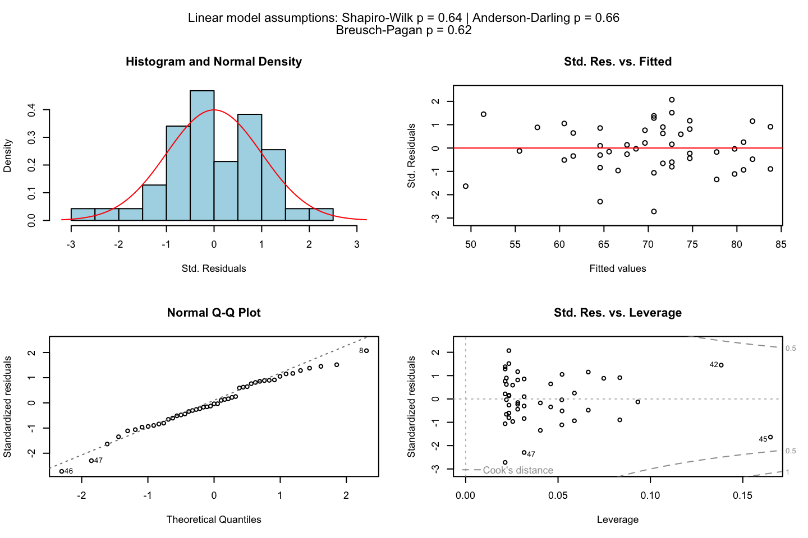
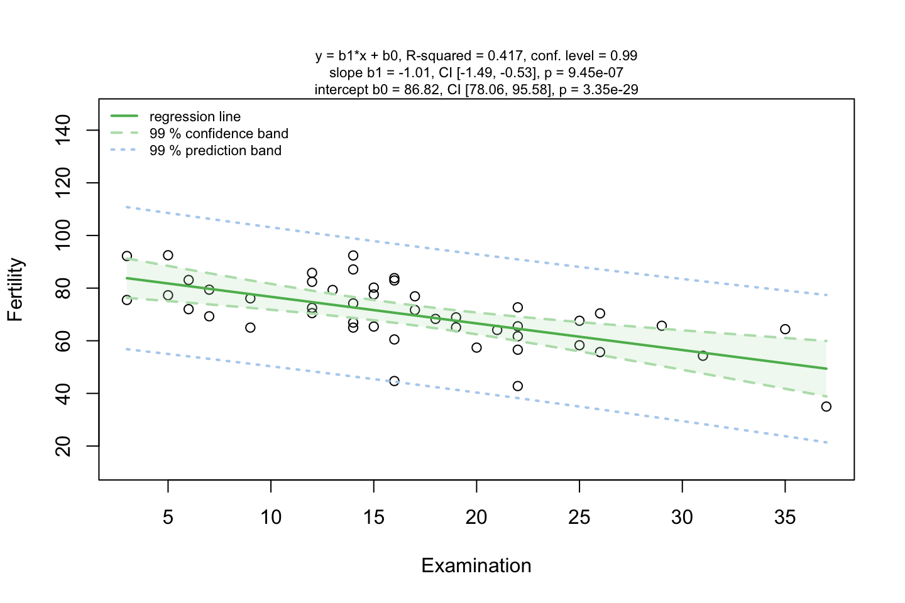
In this example, scatter plots of the standardised residuals and the Q-Q plot suggest that the residuals are not normally distributed. This is confirmed by very small p-values from both the Shapiro–Wilk and Anderson-Darling tests.
If both p-values are below the significance level
,
visstat() switches to the non-parametric
kruskal.test(). Post-hoc analysis using
pairwise.wilcox.test() shows significant differences in
petal width between all three species, as indicated by distinct group
labels (all green letters differ).
Both variables numeric
Simple linear regression (lm())
If both the predictor and the response are numeric and contain only
one level each, visstat() performs a simple linear
regression.
The resulting regression plot displays the point estimate of the regression line
where is the response variable, is the predictor variable, is the intercept, and is the slope of the regression line.
Residual analysis
visstat() checks the normality of the standardised
residuals from lm() both with diagnostic plots and using
the Shapiro–Wilk and Anderson-Darling tests. (via
visAnovassumptions())
Note, that regardless of the result of the residual analysis,
visstat() proceeds to perform the regression. The title of
the graphical output indicates the chosen confidence level
(conf.level), the estimated regression parameters with
their confidence intervals and p-values, and the adjusted
.
The plot displays the raw data, the fitted regression line, and both the
confidence and prediction bands corresponding to the specified
conf.level.
visstat() returns a list containing the regression test
statistics, the p-values from the normality tests of the standardised
residuals, and the pointwise estimates of the confidence and prediction
bands.
Examples
dataset: `trees``
The trees data set contains the diameter
Girth in inches and Volume in cubic ft of 31
black cherry trees.
linreg_trees <- visstat(trees$Girth, trees$Volume,conf.level=0.9)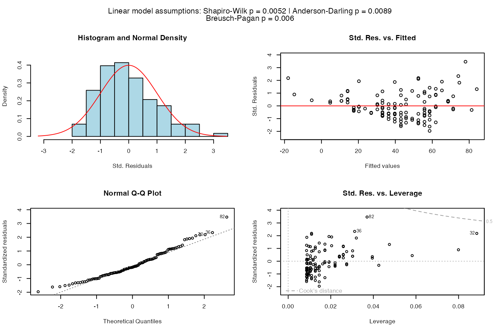
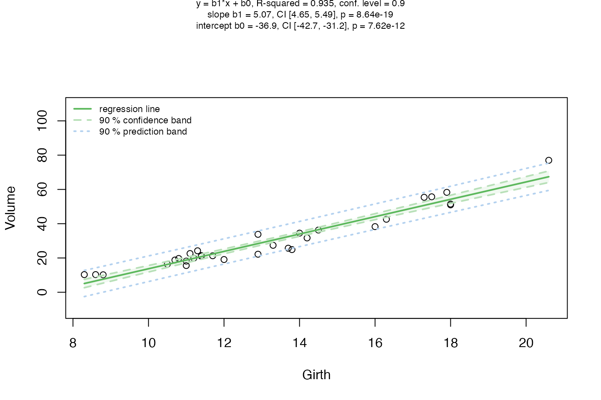
## Warning: Statistical assumptions violated:
## Homoscedasticity violated (Breusch-Pagan p = 0.0178 )
## Analysis proceeded but interpret results cautiously.## RECOMMENDATION: Consider using do_regression = FALSE for robust correlation analysisp-values greater than conf.level in both the
Anderson-Darling normality test and the Shapiro–Wilk test of the
standardised residuals indicate that the normality assumption of the
residuals underlying the linear regression is met.
Increasing the confidence level conf.level from the
default 0.9 to 0.99 results in wider confidence intervals of the
regression parameters as well as wider confidence and prediction
bands
linreg_trees_99 <- visstat(trees$Girth, trees$Volume,conf.level = 0.99)The visStatistics plot allows to display only the second
generated plot (the assumption plot is unchanged):
plot(linreg_trees_99,which=2)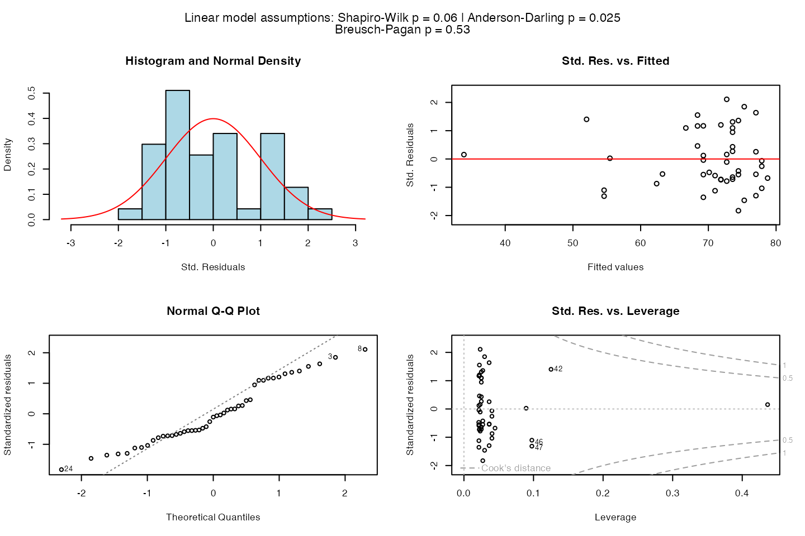
Pearson and Spearman correlation (cor())
If both variables are numeric and contain only one level each,
visstat() computes correlation coefficients to measure the
strength and direction of their linear or monotonic relationship, if the
flag do_regression=FALSE is set.
The Pearson correlation coefficient quantifies the linear association between variables and , where is the sample covariance measuring how the variables vary together, and and are the standard deviations representing the spread of each variable individually, while the Spearman correlation coefficient applies the Pearson correlation formula to the ranked values of and , measuring monotonic relationships by calculating the linear correlation between the rank-transformed variables rather than the original data values.
visstat() automatically switches between Pearson and
Spearman correlation based on the normality of both variables, assessed
using the Shapiro–Wilk-test. If both x and y
are normally distributed (p-values greater than
1-conf.level), Pearson correlation is computed; otherwise,
Spearman correlation is used.
Example Spearman correlation
Here, we use the swiss data set, standardised fertility
measure and socioeconomic indicators for each of 47 French-speaking
provinces of Switzerland at about 1888. Both fertility and education
level are given in percentage points.
result_swiss1 <- visstat(swiss$Fertility,
swiss$Education,do_regression = FALSE)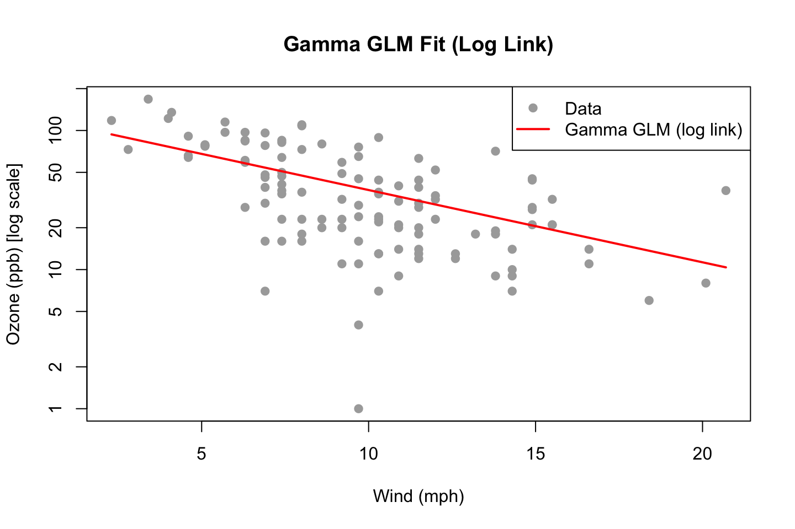
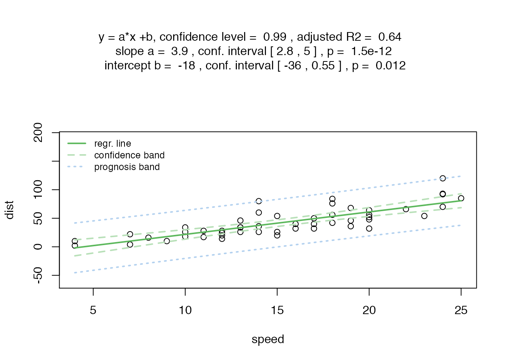
Since both variables are not normally distributed (p-values from the
Shapiro–Wilk test are smaller than 1 -
conf.level), visstat() computes the Spearman
correlation.
Example Pearson correlation
The women dataset contains average heights and weights
for American women, which are approximately normally distributed.
result_women <- visstat(women$height, women$weight, do_regression = FALSE)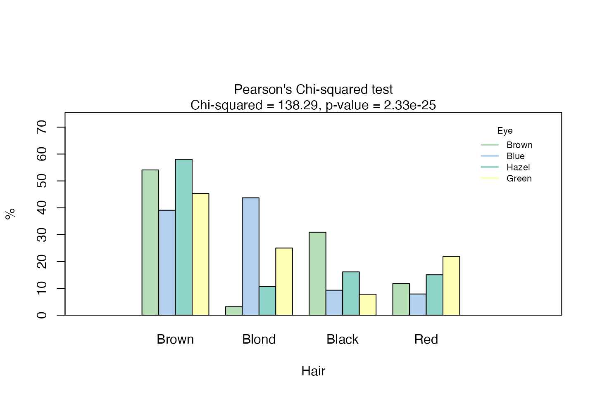
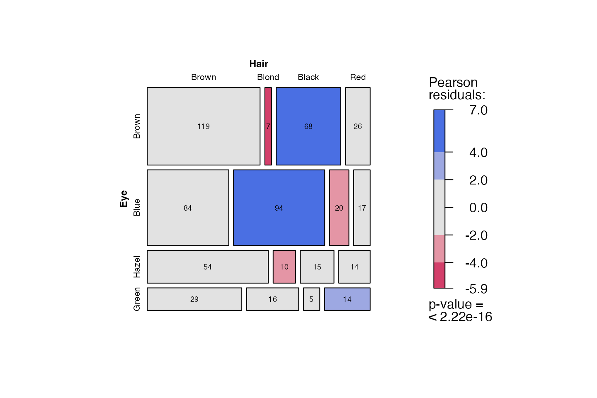
Here, both variables pass the Shapiro-Wilk normality test (), so Pearson correlation is used.
Both variables categorical: Comparing proportions
When both variables are categorical (i.e., of class
factor), visstat() tests the null hypothesis
that the two variables are independent. Observed frequencies are
typically arranged in a contingency table, where rows index the levels
of the response variable and columns index the levels
of the predictor variable.
Pearson’s residuals and mosaic plots
Mosaic plots provide a graphical representation of contingency tables, where the area of each tile is proportional to the observed cell frequency. To aid interpretation, tiles are coloured based on Pearson residuals from a chi-squared test of independence. These residuals measure the standardised deviation of observed from expected counts under the null hypothesis of independence.
Let and denote the observed and expected frequencies in row and column of an contingency table. The Pearson residual for each cell is defined as
Positive residuals (shaded in blue) indicate observed counts greater than expected, while negative values suggest under-representation (shaded in red). Colour shading thus highlights which combinations of categorical levels contribute most to the overall association.
Pearson’s
-test
(chisq.test())
The test statistic of Pearson’s -test (Pearson 1900) is the sum of squared Pearson residuals:
The test statistic is compared to the chi-squared distribution with $ (R - 1)(C - 1)$ degrees of freedom. The resulting p-value corresponds to the upper tail probability — that is, the probability of observing a value greater than or equal to the test statistic under the null hypothesis.
Pearson’s test with Yates’ continuity correction
Yates’ correction is applied to the Pearson statistic in contingency tables (with one degree of freedom). In this case, the approximation of the discrete sampling distribution by the continuous distribution tends to overestimate the significance level of the test. To correct for this, Yates proposed subtracting 0.5 from each absolute difference between observed and expected counts (Yates 1934), resulting in a smaller test statistic:
This reduced test statistic yields a larger p-value, thereby lowering the risk of a Type I error.
Yates’ continuity correction is applied by default by the underlying
routine chisq.test().
Fisher’s exact test (fisher.test())
The
approximation is considered reliable only if no expected cell count is
less than 1 and no more than 20 percent of cells have expected counts
below 5 (Cochran
1954)). If this condition is not met, Fisher’s exact test
(Fisher
1970) (fisher.test()) is applied instead, as it
is a non-parametric method that does not rely on large-sample
approximations. The test calculates an exact p-value for testing
independence by conditioning on the observed margins: the row totals
and the column totals
,
defining the structure of the contingency table.
In the case, the observed table can be written as:
Let denote the above observed contingency table. The exact probability of observing this table under the null hypothesis of independence, given the fixed margins, is given by the hypergeometric probability mass function (PMF)
where is the total sample size.
The p-value is computed by summing the probabilities of all tables with the same margins whose probabilities under the null are less than or equal to that of the observed table.
For general
tables, fisher.test() generalises this approach using the
multivariate hypergeometric distribution.
Test choice and graphical output
If the expected frequencies are sufficiently large - specifically, if
at least 80% of the cells have expected counts greater than 5 and no
expected count is smaller than 1, the function uses Pearson’s
-test
(chisq.test()).
Otherwise, it switches to Fisher’s exact test
(fisher.test()) (Cochran 1954).
For 2-by-2 contingency tables, Yates’ continuity correction (Yates 1934) is always applied to Pearson’s -test.
For all tests of independence visstat() displays a
grouped column plot that includes the respective test’s p-value in the
title, as well as a mosaic plot showing colour-coded Pearson residuals
and the p-value of Pearson’s
-test.
Transforming a contingency table to a data frame
The following examples for tests of categorical predictor and
response are all based on the HairEyeColor contingency
table.
Contingency tables must be converted to the required column-based
data.frame using the helper function
counts_to_cases(). The function transforms the contingency
table HairEyeColor into data.frame named
HairEyeColourDataFrame.
HairEyeColourDataFrame <- counts_to_cases(as.data.frame(HairEyeColor))Examples
In all examples of this section, we will test the null hypothesis that hair colour (“Hair”) and eye colour (“Eye”) are independent of each other.
Pearson’s
-test
(chisq.test())
hair_eye_colour_df <- counts_to_cases(as.data.frame(HairEyeColor))
visstat(hair_eye_colour_df$Eye, hair_eye_colour_df$Hair)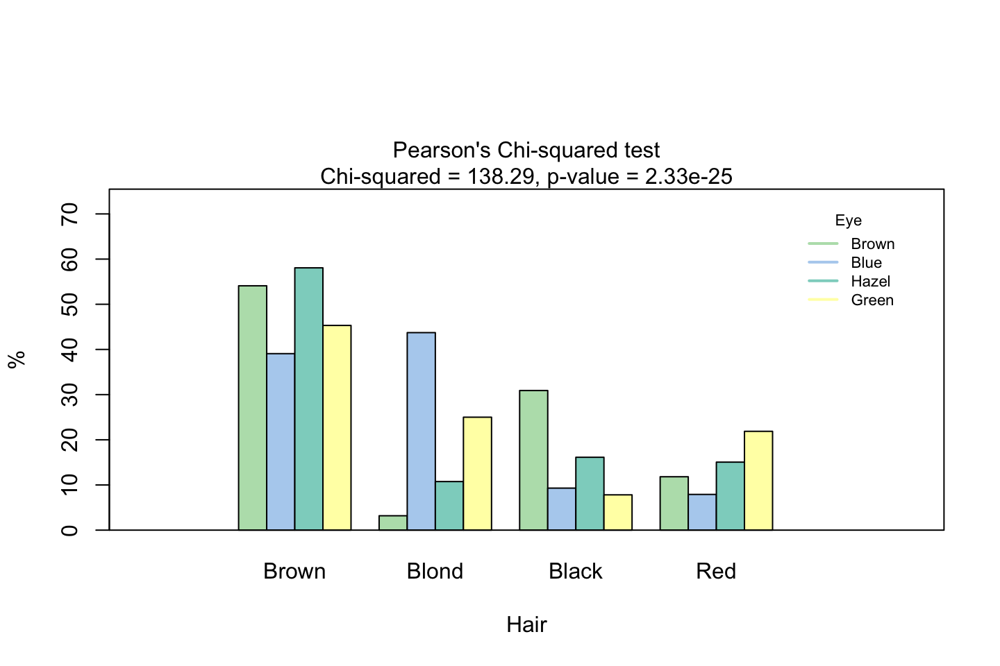
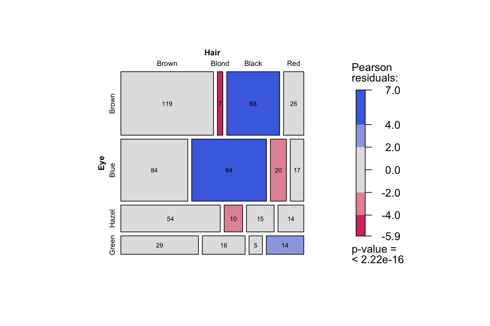
The graphical output shows that the null hypothesis of Pearson’s test – namely, that hair colour and eye colour are independent – must be rejected at the default significance level (). The mosaic plot indicates that the strongest deviations are due to over-representation of individuals with black hair and brown eyes, and of those with blond hair and blue eyes. In contrast, individuals with blond hair and brown eyes are the most under-represented.
Pearson’s -test with Yate’s continuity correction
In the following example, we restrict the data to participants with either black or brown hair and either brown or blue eyes, resulting in a 2-by-2 contingency table.
hair_black_brown_eyes_brown_blue <- HairEyeColor[1:2, 1:2, ]
# Transform to data frame
hair_black_brown_eyes_brown_blue_df <- counts_to_cases(as.data.frame(hair_black_brown_eyes_brown_blue))
# Chi-squared test
visstat(hair_black_brown_eyes_brown_blue_df$Eye, hair_black_brown_eyes_brown_blue_df$Hair)
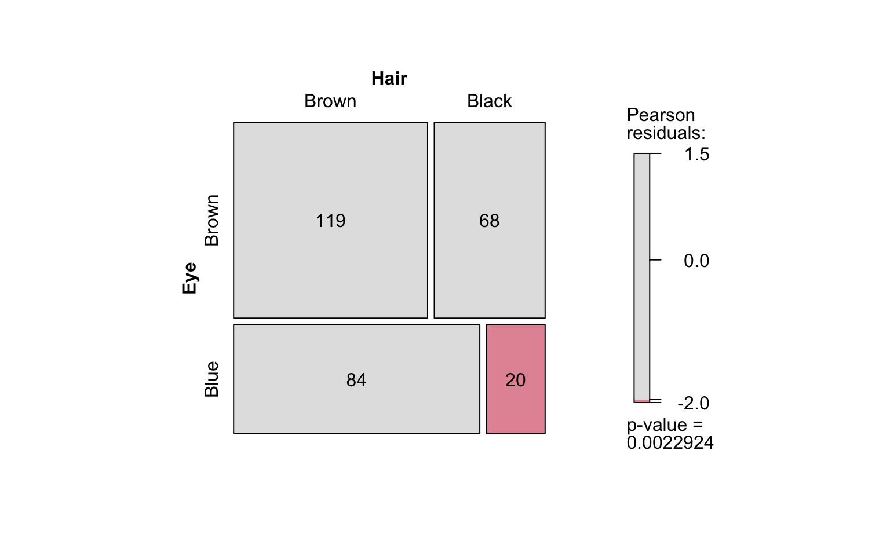
Also in this reduced dataset we reject the null hypothesis of independence of the hair colors “brown” and “black” from the eye colours “brown” and ” blue”. The mosaic plot shows that blue-eyed persons with black hair are under- represented. Note the higher p-value of Pearson’s -test with Yate’s continuity correction (p = 0.00354) compared to the p-value of Pearson’s -test (p = 0.00229) shown in the mosaic plot.
Fisher’s exact test (fisher.test())
Again, we extract a 2-by-2 contingency table from the full dataset, this time keeping only male participants with black or brown hair and hazel or green eyes.
Pearson’s test applied to this table would yield an expected frequency less than 5 in one of the four cells (25% of all cells), which violates the requirement that at least 80% of the expected frequencies must be 5 or greater (Cochran 1954).
Therefore, visstat() automatically selects Fisher’s
exact test instead.
hair_eye_colour_male <- HairEyeColor[, , 1]
# Slice out a 2 by 2 contingency table
black_brown_hazel_green_male <- hair_eye_colour_male[1:2, 3:4]
# Transform to data frame
black_brown_hazel_green_male <- counts_to_cases(as.data.frame(black_brown_hazel_green_male))
# Fisher test
fisher_stats <- visstat(black_brown_hazel_green_male$Eye, black_brown_hazel_green_male$Hair)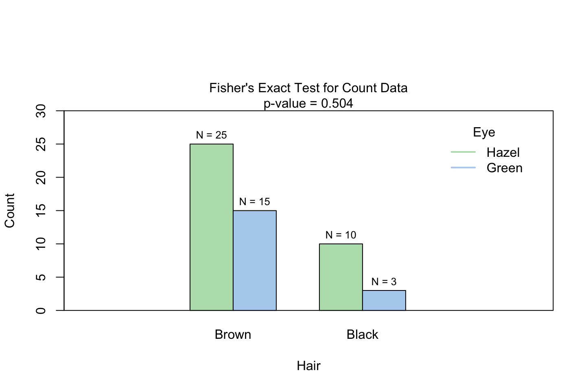

Ordinal Response Variables
When the response variable is an ordered factor (e.g., Likert scale
ratings) of class ordered and the predictor is categorical,
visstat() converts the ordered response to numeric ranks
and default to non-parametric tests.
Users should declare Likert scale responses as ordered factors using
ordered() to ensure proper analysis.
Saving the graphical output
All generated graphics can be saved in any file format supported by
Cairo(), including “png”, “jpeg”, “pdf”, “svg”, “ps”, and
“tiff” in the user specified plotDirectory.
If the optional argument plotName is not given, the
naming of the output follows the pattern
"testname_namey_namex.", where "testname"
specifies the selected test and "namey" and
"namex" are character strings naming the selected data
vectors y and x, respectively. The suffix
corresponding to the chosen graphicsoutput (e.g.,
"pdf", "png") is then concatenated to form the
complete output file name.
In the following example, we store the graphics in png
format in the plotDirectory tempdir() with the
default naming convention:
#Graphical output written to plotDirectory: In this example
# a bar chart to visualise the Chi-squared test and mosaic plot showing
# Pearson's residuals.
#chi_squared_or_fisher_Hair_Eye.png and mosaic_complete_Hair_Eye.png
save_fisher = visstat(black_brown_hazel_green_male$Eye, black_brown_hazel_green_male$Hair,
graphicsoutput = "png", plotDirectory = tempdir())The full file path of the generated graphics are stored as the
attribute "plot_paths" on the returned object of class
"visstat".
## [1] "/var/folders/5c/n85wqnh95l50qbp3s9l0rp_w0000gn/T//Rtmpv2dPAs/chi_squared_or_fisher_Hair_Eye.png"
## [2] "/var/folders/5c/n85wqnh95l50qbp3s9l0rp_w0000gn/T//Rtmpv2dPAs/mosaic_complete_Hair_Eye.png"Remove the graphical output from plotDirectory:
file.remove(paths)## [1] TRUE TRUEWhen assumptions plots (residual and Q-Q plot) are generated, the
corresponding plot has the prefix "assumption_.
Limitations
Limitations by default settings
The main purpose of this package is a decision-logic based automatic
visualisation of statistical test results. Therefore, except for the
user-adjustable conf.level parameter, all statistical tests
are applied using their default settings from the corresponding base R
functions. As a consequence, paired tests are currently not supported
and visstat() does not allow to study interactions terms
between the different levels of an independent variable in an analysis
of variance. Focusing on the graphical representation of tests, only
simple linear regression is implemented, as multiple linear regressions
cannot be visualised.
Limitations of decision-logic based on p-values of hypothesis tests
This package uses the Shapiro-Wilk test to select between parametric (ANOVA/Welch’s t-test) and non-parametric (Kruskal-Wallis/Wilcoxon) methods for groups smaller than 50, whereas it defaults to parametric tests for groups bigger than 50 best on the CLT.
However, no single test maintains optimal Type I error rates and statistical power across all distributions (Olejnik and Algina 1987), and p-values obtained from these tests may be unreliable if their assumptions are violated.
Assessing assumptions solely through p-values can lead to both type I errors (false positives) and type II errors (false negatives). In large samples, even minor, random deviations from the null hypothesis can result in statistically significant p-values, leading to type I errors. Conversely, in small samples, substantial violations of the assumption may not reach statistical significance, resulting in type II errors (Kozak and Piepho 2018).
Moreover, assumption tests provide no information on the nature of
deviations from the expected distribution (Shatz 2024). Thus the assessment of
normality or homoscedacity should never rely solely on p-values but
should be complemented by visual inspection of the diagnostic plots
generated by visstat().
Limitations of normality testing
Normality tests behave poorly at both ends of the sample-size range: with small samples they fail to detect non-normality, and with large samples they flag negligible departures from normality as significant (Ghasemi and Zahediasl 2012; Fagerland 2012; Franc 2025).
This package uses per group as a rule of thumb threshold to omit normality testing, assuming parametric tests testing for central tendencies become robust to non-normality at larger sample sizes based on the central limit theorem. In fact, the actual sample size needed for parametric test validity depends on the unknown shape of the underlying distribution (Knief and Forstmeier 2021), with heavily skewed data potentially requiring much larger samples.
For smaller samples, the function defaults to assuming normality if the Shapiro–Wilk test yields a p-value greater than alpha. Simulation studies suggest that Shapiro–Wilk has the highest power among normality tests in small to moderate (to 100) samples sizes(Razali and Wah 2011)
Combining tests inflates the overall Type I error rate
Combining multiple tests with differing assumptions using simple majority voting inflates the overall Type I error rate.
Therefore, automated test selection based solely on p-values cannot
replace the visual inspection of sample distributions provided by
visstat(). Based on the provided diagnostic plots, it may
be necessary to override the automated choice of test in individual
cases.
Bootstrapping as modern alternative to hypothesis testing
Bootstrapping methods (Wilcox 2021) make minimal distributional assumptions and can provide confidence intervals for nearly any statistic. However, bootstrapping is computationally intensive, often requiring thousands of resamples, and may perform poorly with very small sample sizes.
The computational intensity of bootstrap and runs counter to the
purpose of the visStatistics package, which is designed to
offer a rapid overview of the data, laying the groundwork for deeper
analysis in subsequent steps.
The package targets users with basic statistical literacy, such as non-specialist professionals and students in applied fields. It covers topics typically included in an undergraduate course on applied statistics, intentionally excluding more advanced methods like bootstrapping to keep the focus on foundational concepts.